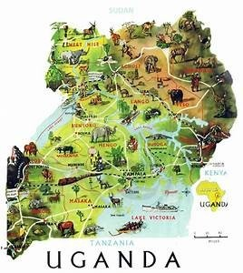

Book tailor made gorilla safaris to Rwanda, Uganda and Congo with Africa Adventure safaris, the ultin Uganda, Rwanda and
Congo. With over 15 years of experience, ASS offers you the best gorilla safari p experiences worth the cost. We offer
discounted gorilla trekking tours to Volcanoes National park, Mga gorilla national park, Bwindi Forest National Park and

Virunga national park giving you chance to have ; encounter with the endangered mountain gorillas. Besides gorilla
trekking , we offer exceptional game viewing tours, eco tours, African cultural trips and wildlife safaris to Kenya &
Tanzania national parks. 0 safaris also involve visiting cultural centers in Rwanda and Uganda for extensive cultural
experiences. \1 pride ourselves in employing experienced staff with indigenous knowledge about wildlife, people and g
tourism ideas in Uganda, Rwanda, Congo and the whole of East Africa.
We offer rescue services in case of any eventuality while on a gorilla trek experience or any other wildli· ensuring a
peaceful and memorable gorilla tracking experience. Refer to our travel reviews on gorilla sa Rwanda, DR Congo and
Uganda. Gorilla tracking permits are usually on high demand. You are advised ·